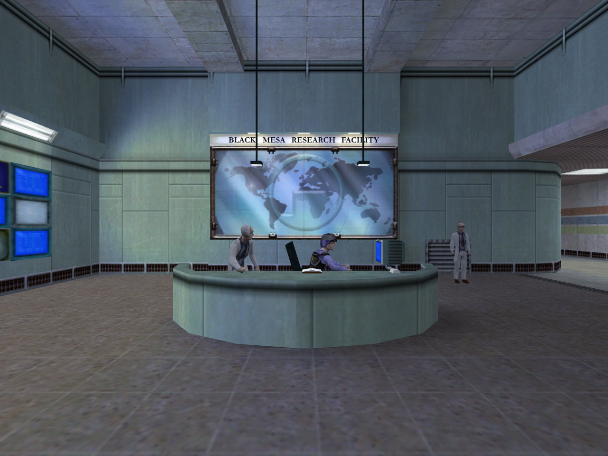
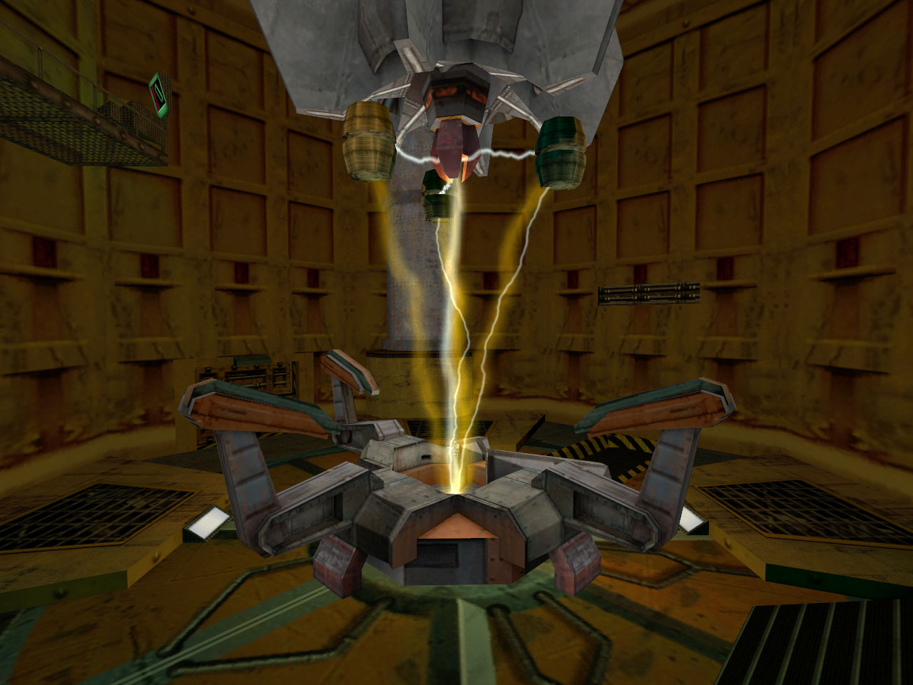

<!DOCTYPE html>
<html lang="en-GB">
    <head>
        <title>Anomalous Materials</title>
        <meta charset="UTF-8">
        <meta name="viewport" content="width=device-width, initial-scale=1.0">
        <link rel="stylesheet" href="styles.css">
        <script src="time.js"></script>
    </html>
    <body>
        <div style="display: flex; flex-direction: column; align-items: center; min-height: 100vh;">
            <header>
                <div style="text-align: center;">
                    
                </div>
                <h1>Black Mesa Research Facility</h1>
                <div style="background: #222; border: 2px solid #ff8000; padding: 8px 0; font-size: 14px; margin: 12px 0;">
                    <marquee><span id="time_mdt"></span></marquee>
                </div>
                <nav>
                    <ul style="list-style: none; padding: 0; display: flex; gap: 1em; justify-content: center;">
                        <li><a href="blep.html">Home</a></li>
                        <li><a href="anomalous.html">Anomalous Materials</a></li>
                        <li><a href="lambda.html">Lambda Complex</a></li>
                    </ul>
                </nav>
            </header>
            <main style="text-align: center;">
                <h2>Anomalous Materials (Sector C)</h2>
                <p>Welcome to the Anomalous Materials sector, where groundbreaking research is conducted on exotic materials and their properties. 
                    Our scientists are dedicated to unlocking the secrets of the universe through advanced experimentation.
                </p>
                
                <p style="margin-top: 2em;">
                    The Anomalous Materials sector is the heart of Black Mesa's research into exotic materials and their applications. 
                    It houses state-of-the-art laboratories, containment facilities, and a team of experts working on cutting-edge projects. 
                    Access to this sector is strictly controlled, with only authorized personnel allowed beyond security checkpoints. 
                    The facility is equipped with advanced equipment for analyzing and manipulating anomalous materials, ensuring the safety and integrity of all experiments.
                </p>
                <div style="display: flex; align-items: center; justify-content: center; gap: 24px; margin-top: 16px;">
                    
                    <p style="max-width: 400px; text-align: left;">
                        The Test Chamber is a critical component of the Anomalous Materials sector, designed for high-energy experiments and containment of exotic specimens.
                        It features advanced safety protocols and monitoring systems to ensure the integrity of experiments and the safety of personnel.
                        We have made sure that a resonance cascade scenario will never happen, and all safety measures are in place to prevent any accidents.
                    </p>
                </div>
            </main>
            <br>
            <footer style="background: #222; border: 2px solid #ff8000; padding: 8px 200px; font-size: 12px; text-align: center;">
                <div style="margin-bottom: 6px;">
                    &copy; 2000 Black Mesa Research Facility. All rights reserved.
                </div>
                <div style="margin-bottom: 6px;">
                    </a>
                    <a href="lambda.html"></a>
                    </a>
                </div>
                <div>
                    
                    
                </div>
            </footer>
        </div>
    </body>

